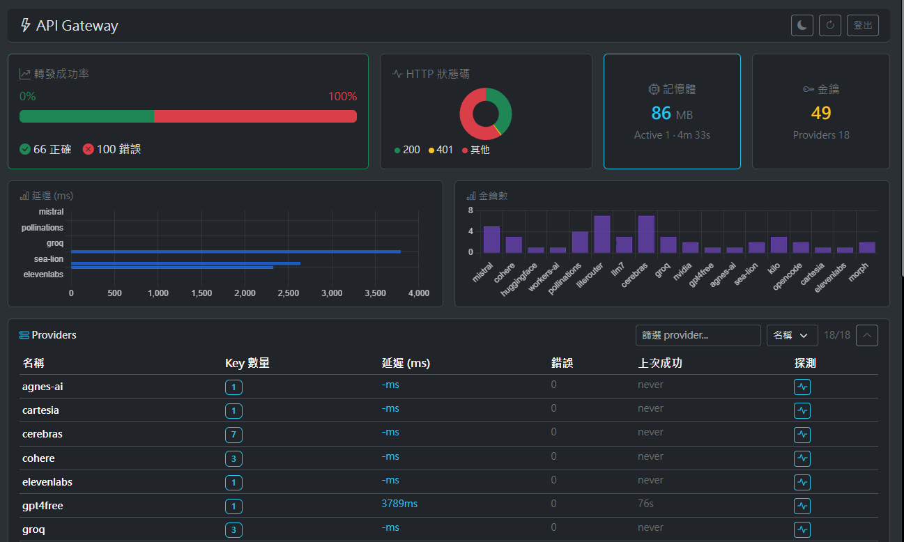

A lightweight OpenAI-compatible API gateway featuring multi-key polling, failover, multi-provider routing, custom route mapping, key management, and a simple dashboard. Runs on bare Node.js with zero dependencies.

Easy config and monitoring dashboard
Zero dependencies. Deploy anywhere in seconds.
Route to OpenAI, DeepSeek, Mistral, Groq, Anthropic, VyceAI, AMD Radeon, BazaarLink, FlatKey, TokenRouter, or any OpenAI-compatible provider from a single endpoint.
A simple JSON-formatted key list for easy configuration and backup.
Metrics: request rate, latency, error codes, provider health. Built-in console served from memory.
Track request usage and errors.
Continuous health checks with visual status indicators. Automatic provider degradation detection.
Support per-key RPM and model context size limits.
Need Node v18+ or Bun JS runtime, download the repository, run the NPM script.
npm starthttp://localhost:3000/console// settings panel or manually the config.json { "port": 3000, "providers": { "openai": { "apiKeys": ["sk-...KeyA", "sk-...KeyB"], "baseUrl": "https://api.openai.com" } }, "models": { "gpt-5.6": "openai" } }
Quick answers to common questions.
http://your.host/console). Works with nginx, Caddy, Cloudflare Tunnel, or any reverse proxy.Loading...